VectorScope — UI Button Guide
Stereo-camera homography visualizer: UW · Main · Tele — continuous 0.5x–10x zoom pipeline.

Screen Layout orientation
Five panels: Bird's Eye (top-left, scene from above), Main / UW / Tele camera views (bottom row), and the Combined view (bottom-right) — the simulated phone output that switches cameras as you zoom. The Controls panel (top-right) hosts every button described in this deck. Bottom-right corner shows the live 3×3 sampling matrix.

Set Camera dialog
Opens the camera parameter editor: intrinsics (fx fy cx cy), extrinsics (position, rotation)
for all three cameras, plus the scene camera pose. Edits apply live — camera panels and the Combined
homography update immediately. A camera JSON file can also be imported.
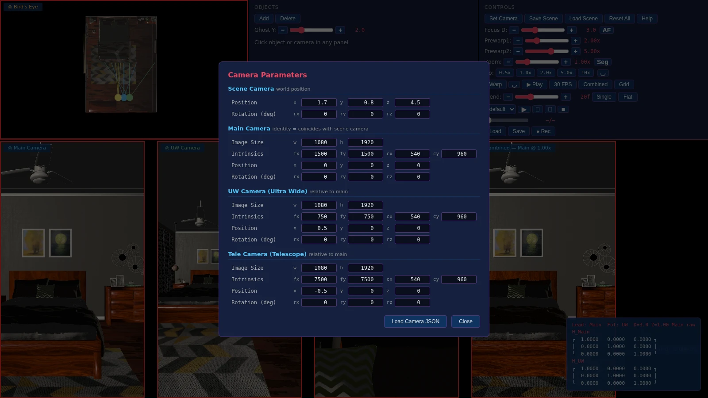
Save Scene · Load Scene · Reset All file ops
Save Scene downloads the full state (objects, cameras, sliders, segment config, curves) as JSON. Load Scene restores it. Reset All returns every control to defaults — below, zoom was at 4.0x with Focus D at 1.2 m; after Reset All the app is back at 1.0x / 3.0 m.
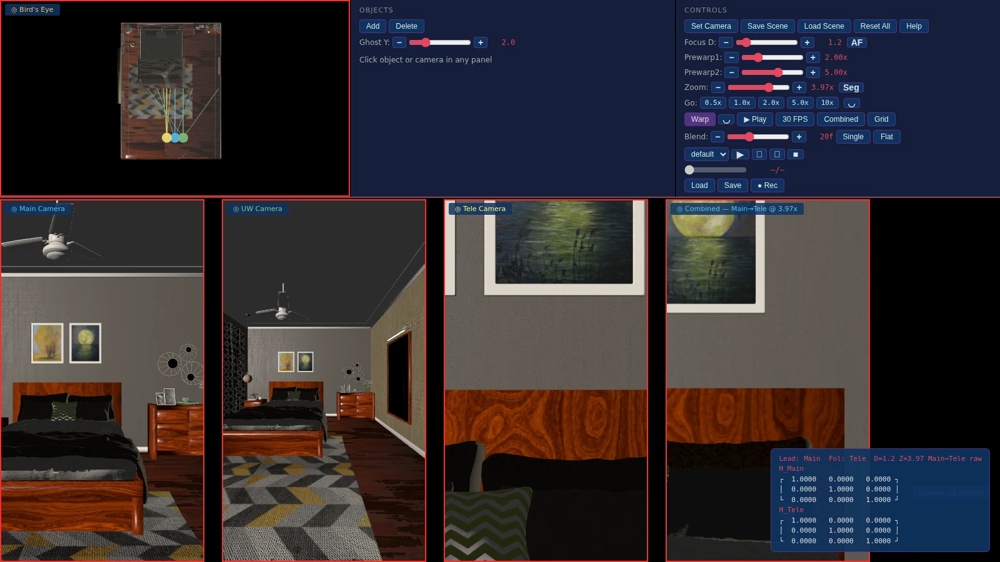
Help dialog
Opens the built-in manual: pipeline explanation, per-segment table, blending modes, radial blend behavior, trajectory recording, and file formats. Rendered from the project docs — always in sync with the code.
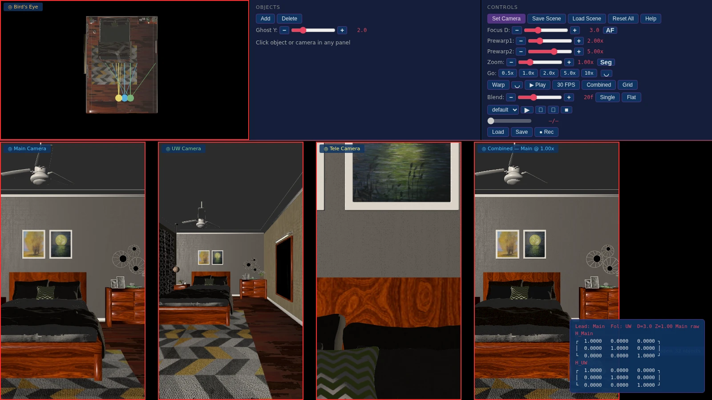
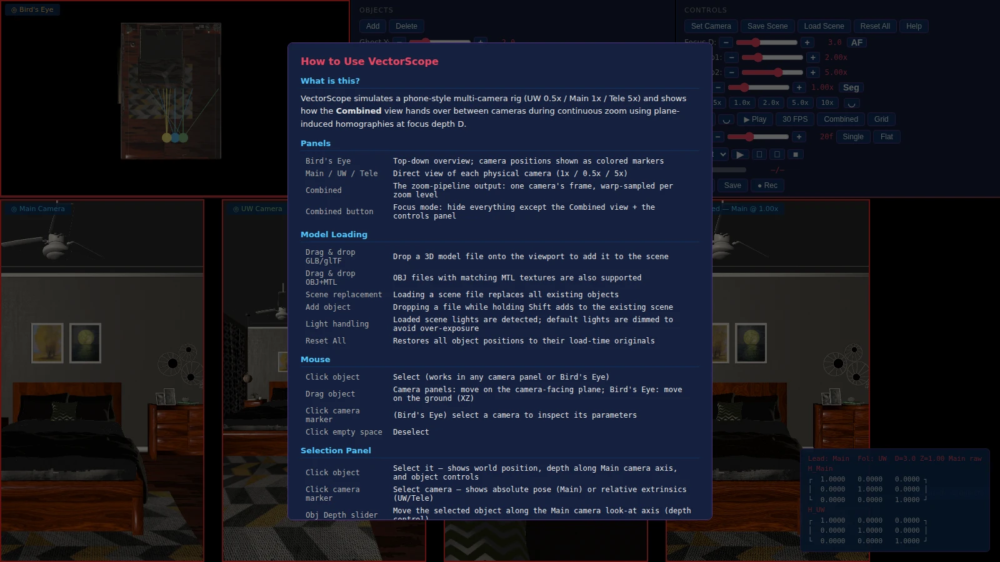
Focus D slider + AF button focus plane
Focus D sets the focus-plane depth used by the plane-induced homographies — objects at this depth align perfectly between cameras; objects off-plane show parallax. AF arms autofocus: drag a box on any camera panel, and the median depth inside the box becomes the new Focus D.
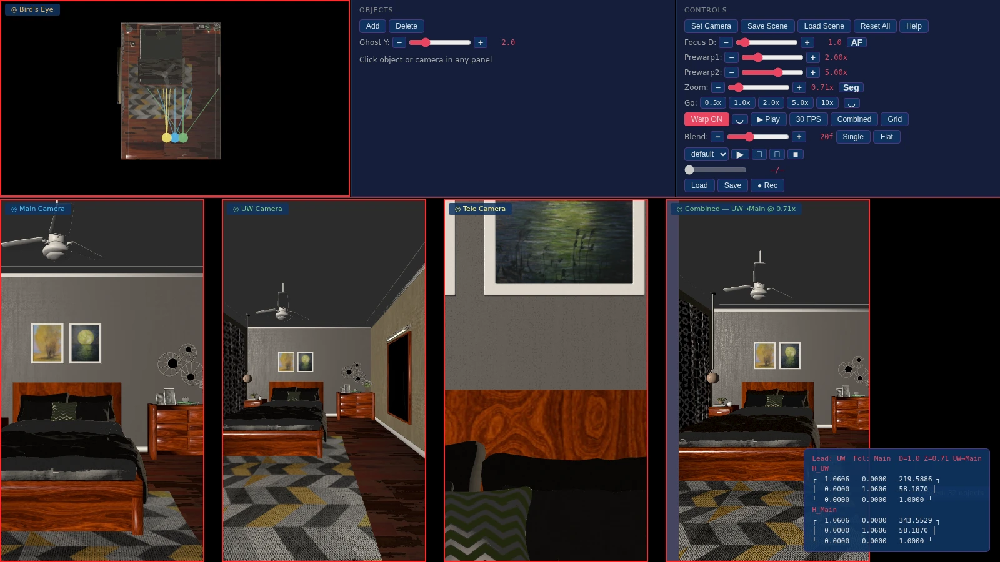
Prewarp 1 / Prewarp 2 sliders warp-off path
When Warp is OFF, camera handovers use a fixed prewarp scale instead of homography interpolation. Prewarp 1 applies to the UW segment (0.5–1.0x), Prewarp 2 to the Main→Tele segment (2.0–5.0x). Below at 0.7x, raising Prewarp 1 from 2.0 → 4.0 visibly changes the Combined framing.
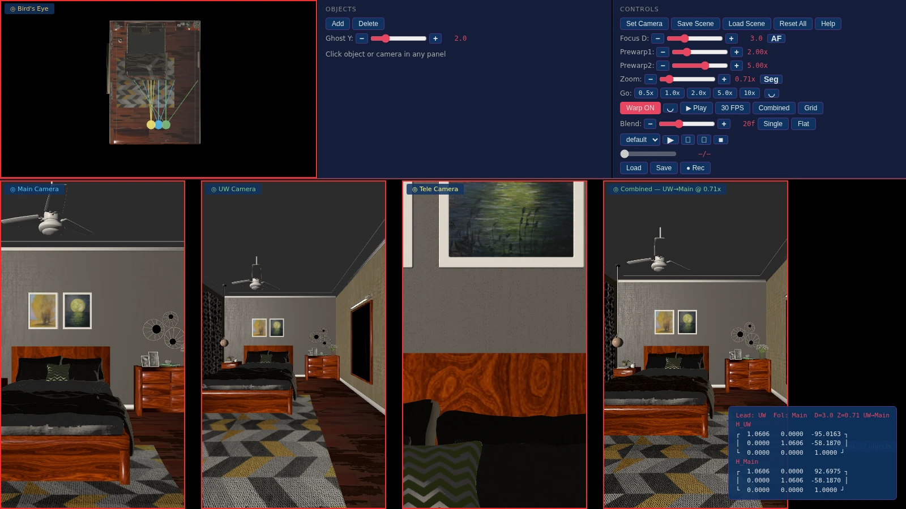
Zoom slider + Go presets 0.5x – 10x
The Zoom slider is log-scaled over 0.5x–10x. The Go presets (0.5x / 1x / 2x / 5x / 10x) animate smoothly to the target using the zoom transition curve. The Combined view's lead camera follows the segment config: UW below 1x → Main → Tele at 5x+.
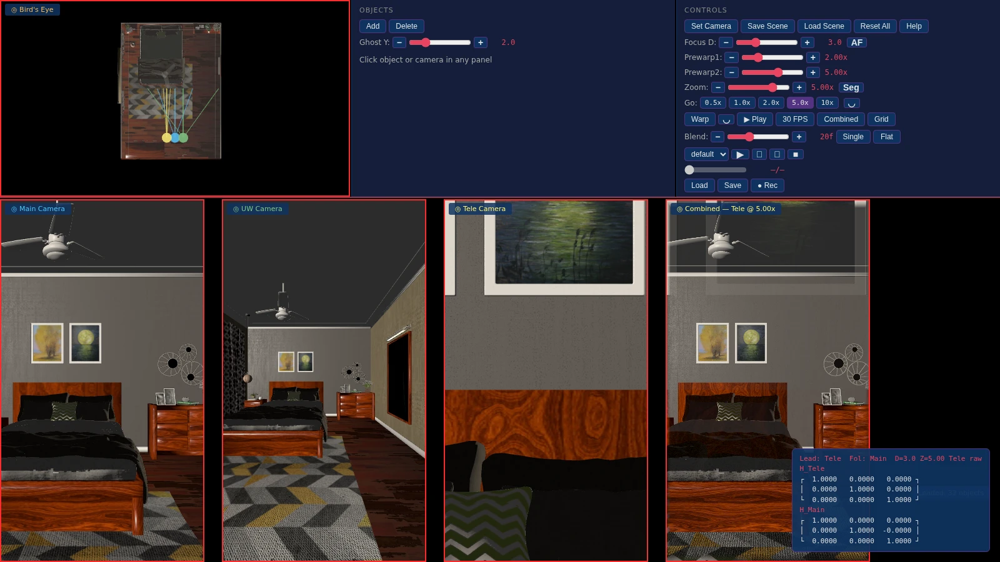
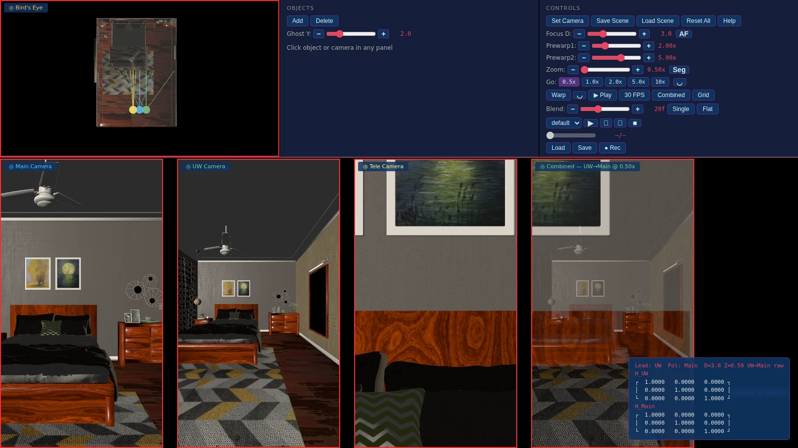
Seg — Segment Config dialog
Configures the zoom pipeline via breakpoints (defaults: 1.0, 2.0, 5.0) that divide 0.5x–10x into
segments. Each segment assigns a Lead camera (shown in Combined), a Follower (used only
during transition blending), and a per-segment Warp flag. Breakpoints auto-sort;
convention: below = z < bp, at/above = z ≥ bp.
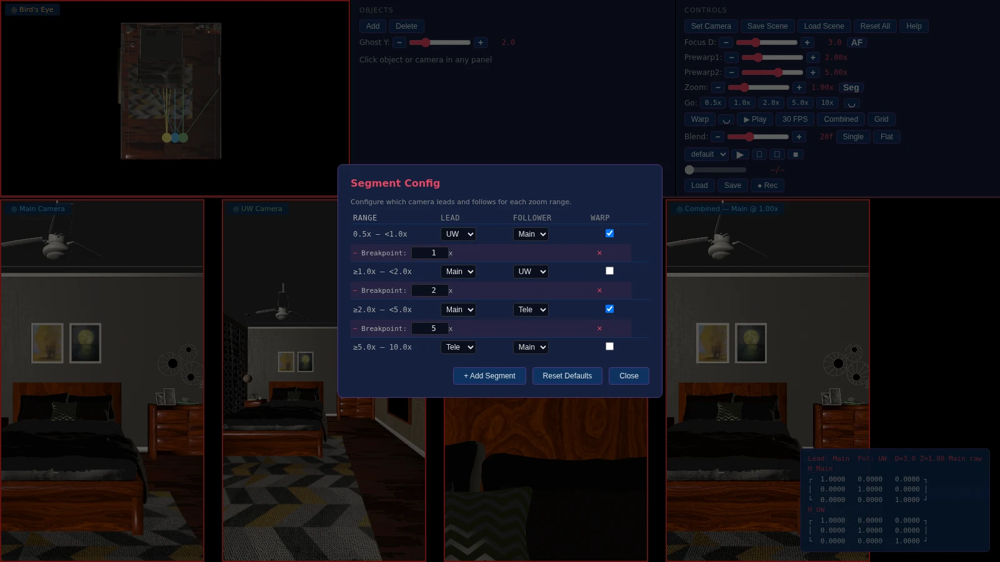
◑ Zoom Curve bezier editor
Photoshop-style cubic bezier editor for the zoom transition speed used by the Go presets — plus the transition duration (ms). Drag the four control points to make transitions ease-in, ease-out, or snappy.
Warp + ◑ Warp Curve homography interpolation
Warp ON: within warp-enabled segments, the sampling matrix interpolates
lerp(I → H⁻¹) on a log-zoom scale — the view morphs continuously between camera perspectives.
Warp OFF: a fixed prewarp × crop is used instead. Below at 0.7x the wall/bed geometry differs between
the two paths. The ◑ warp curve button opens a bezier editor shaping the interpolation parameter t.
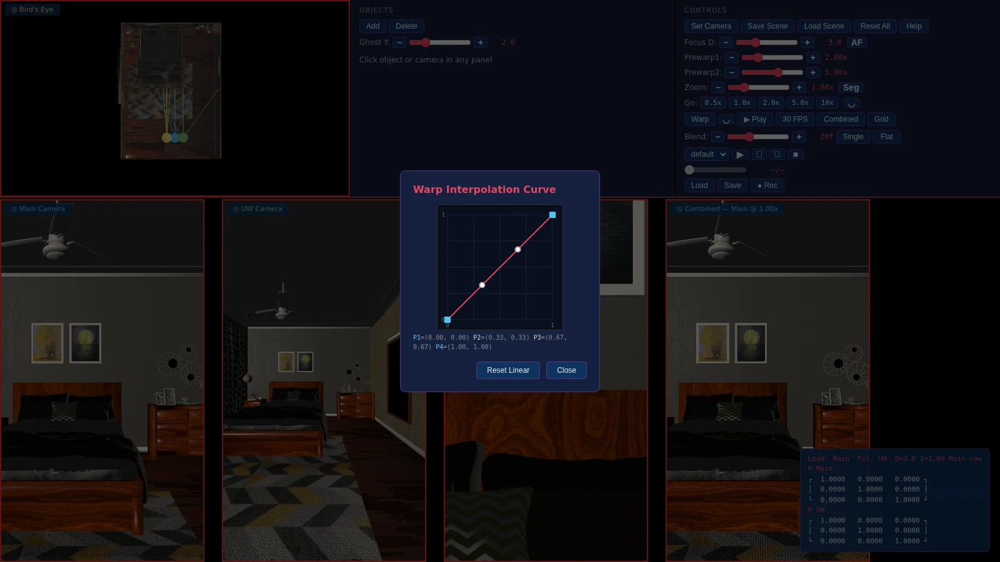
▶ Play auto sweep
Runs an automatic zoom bounce loop: zoom sweeps up to 10x, reverses down to 0.5x, and repeats — a hands-free demo of every camera handover, warp interpolation, and blend. Click again (■ Stop) to end.
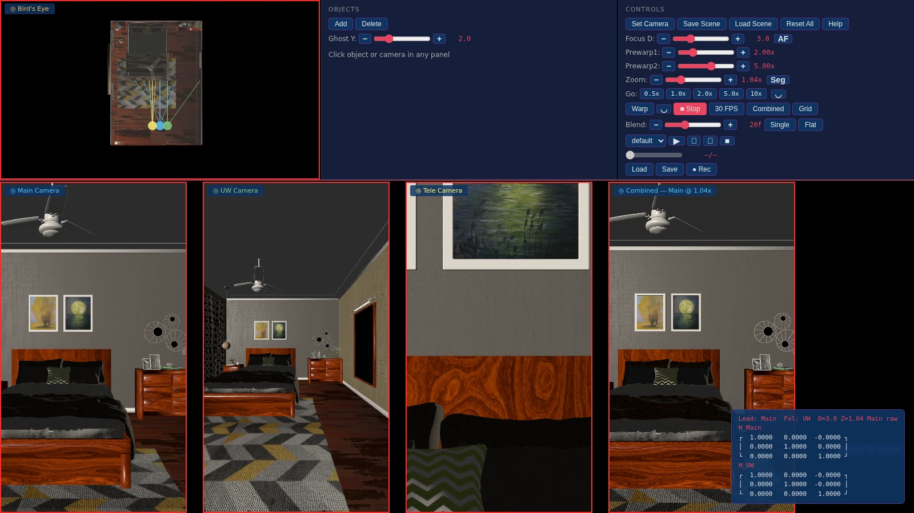
30 / 60 FPS render rate
Toggles the fixed render rate between 30 and 60 FPS. Late frames are dropped, never queued — simulating a real camera pipeline's frame pacing. The button label shows the active rate.
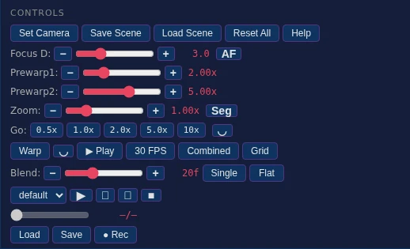
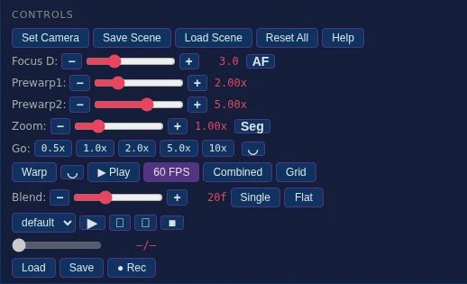
Combined focus mode
Focus mode: hides all other panels and maximizes the Combined view — the simulated phone output. Ideal for judging handover quality and blend artifacts at full size. Click again to restore the 5-panel layout.
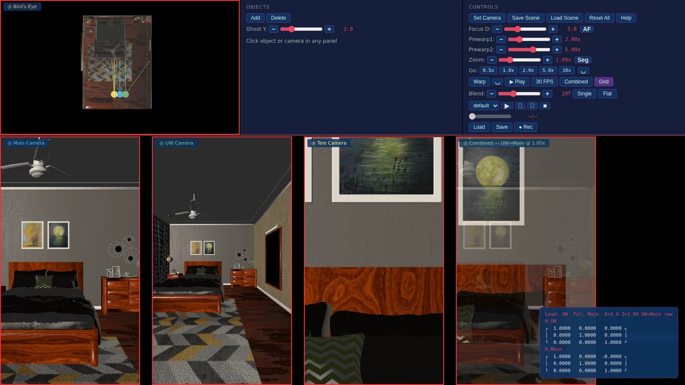
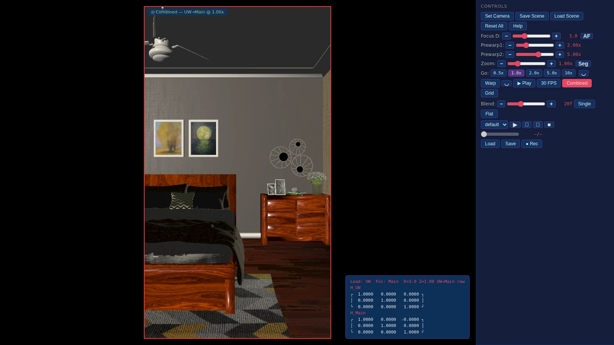
Grid sampling overlay
Overlays the lead and follower sampling grids on the Combined view — each grid drawn in its camera's color (UW green, Main blue, Tele yellow). Shows exactly how the warp maps output pixels back into each camera's frame. Labels appear top-right.
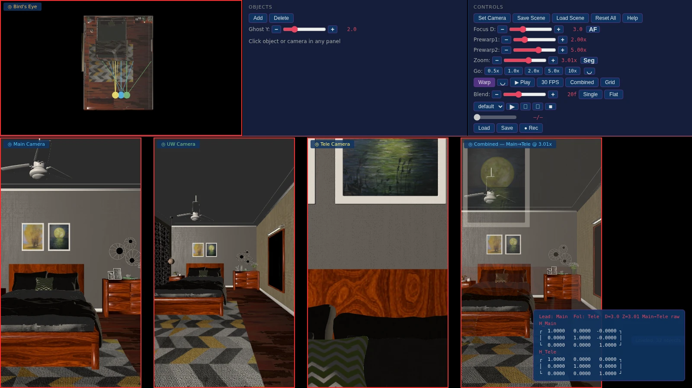
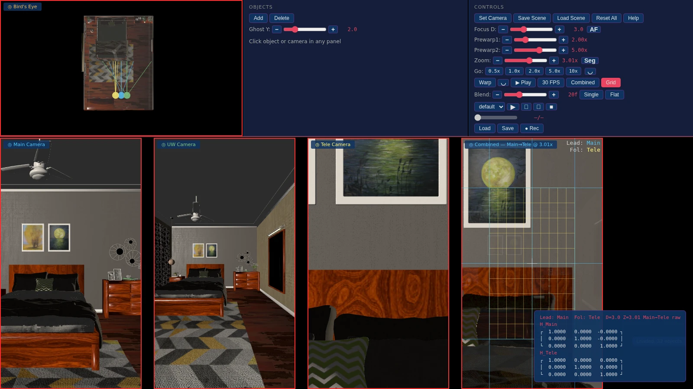
Blend slider · Single/Dual · Flat/Radial camera transition
On a lead-camera switch, the old and new cameras cross-fade over Blend frames. Single freezes the outgoing frame; Dual re-renders the follower live every frame (tracks motion). Flat = uniform alpha; Radial = circular sweep — for Tele→Main the new camera appears from the edges and the Tele region shrinks to the center (below, mid-blend at 60 frames).
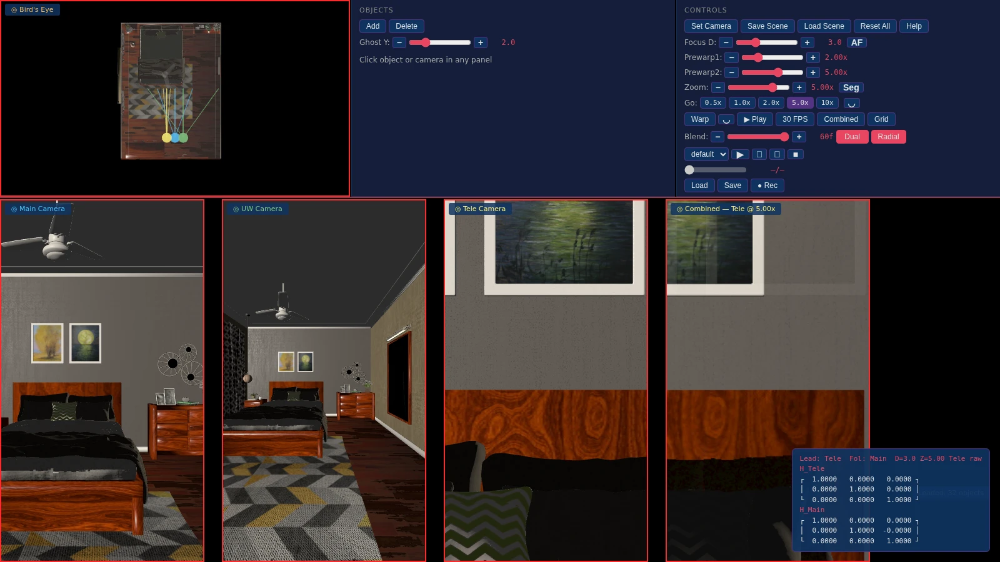
Trajectory: ● Rec · ▶ · ⏮ ⏭ · ■ · Load / Save record & replay
● Rec records every per-frame state (zoom, focus, blend…) into a trajectory. Stop → it appears in the
dropdown; the transport row unlocks: ▶ play/pause, ⏮/⏭ frame-step, progress slider to seek,
■ back to free mode. Load/Save exchange trajectory JSON files (see docs/FILE_FORMATS.md).
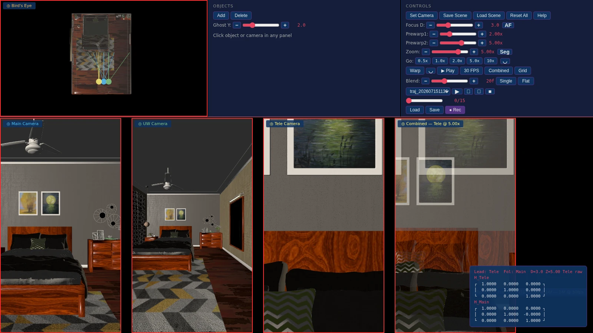
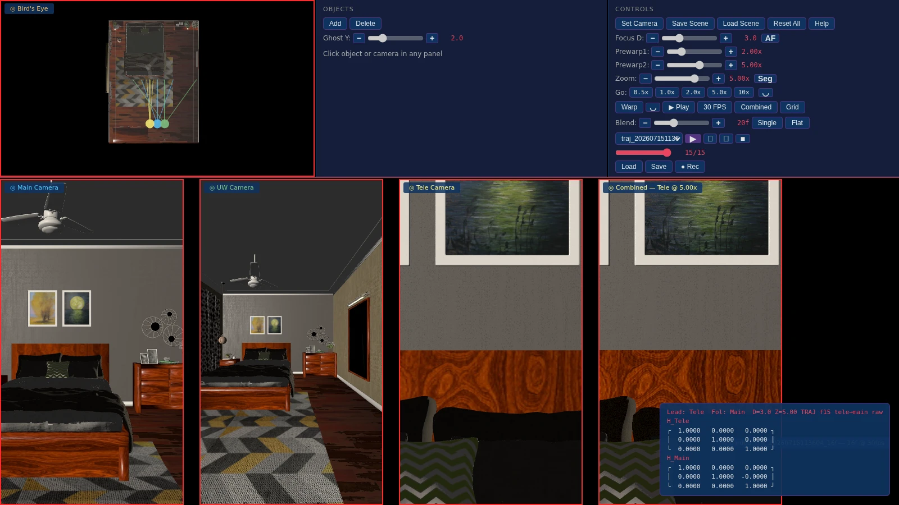
Ghost Y slider bird's eye
Sets the ghost height (world Y) for the Bird's Eye panel: everything above this height renders translucent so it doesn't block the top-down view. At 2.0 m the ceiling is ghosted and you see inside the room; at 6.0 m nothing is ghosted, so the solid roof hides the interior.
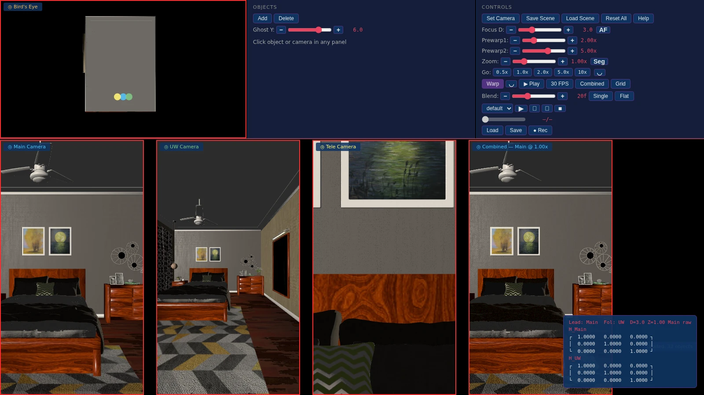
That's every button.
HOMOGRAPHY_PIPELINE.md · RADIAL_BLENDING.md · MODULE_MAP.md · FILE_FORMATS.md · CAMERAS.mdScreenshots auto-generated by
tools/capture-slides.js (Playwright + headless Chrome).